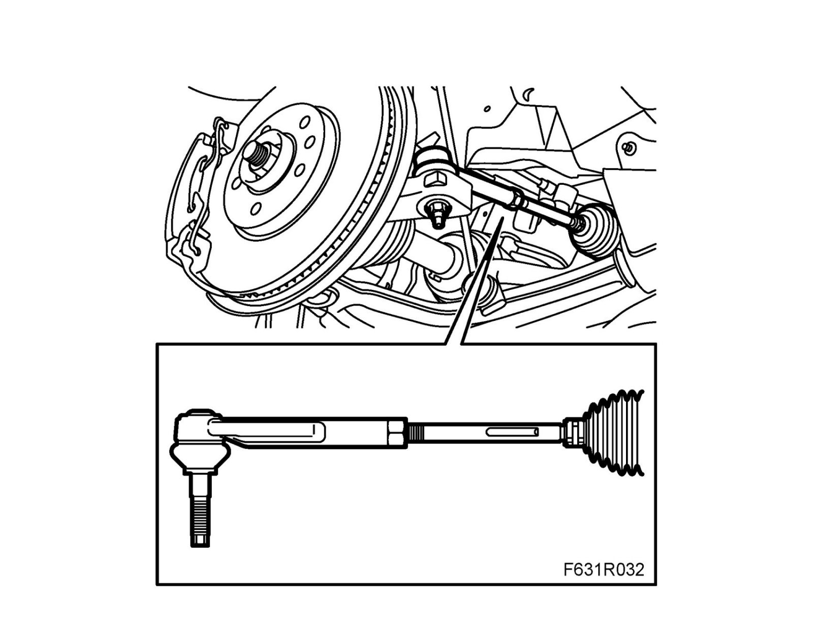

Tie Rod: Testing and Inspection
Steering links, checking
1. Check the wear of the outer ball joints and the inner bearings. They should not have play.
2. Check the protective gaiters.
3. Check the threads of the toe-in adjuster. Anti-corrosion agent should be applied if the threads show any sign of corrosion.